الأول للاستثمار
SAB INVEST
تأسست شركة الأول للاستثمار في 27 ذو الحجة 1428هـ الموافق 01 يناير 2008م، وهي شركة مستقلة للاستثمار مملوكة 100% من البنك السعودي البريطاني. شركة الأول للاستثمار هي شركة شخص واحد مساهمة مغلقة برأس مال 840,000,000 ريال سعودي، بسجل تجاري رقم 1010242378.
حصلت الشركة على الترخيص من هيئة السوق المالية بتاريخ 22 يوليو 2007، وبدأت ممارسة أعمالها بتاريخ 8 إبريل 2008.
نسعى إلى تحقيق قيمة مضافة لعملائنا من خلال الأداء المتميز والالتزام بقيمنا الأساسية.
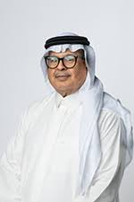
عضو مجلس إدارة البنك السعودي الأول منذ عام 1996م، وكان من أوائل من تولوا المبادرة في خصخصة الشركات السعودية الكبرى. تقلّد مناصب عدة منها عضو مجلس إدارة مدينة الملك عبدالله الاقتصادية، والشركة المتحدة للإلكترونيات (إكسترا)، وشركة عسير للتجارة، وشركة السياحة والصناعة، ومدينة المعرفة الاقتصادية وميناء الملك عبدالله.
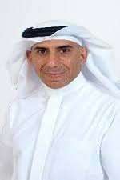
محاسب قانوني معتمد ومستشار إداري واقتصادي ومالي. مؤسس ومدير شريك لشركة Al-Hoshan Russell Bedford CPA & Consultants، ومؤسس ورئيس مجلس إدارة شركة الهوشان للاستشارات (GRACE Saudi Arabia) منذ 1993. يُعدّ أحد المساهمين في تقرير البنك الدولي "Doing Business" السنوي، وعضو رئيس لجنة المراجعة في تداول (TADAWUL)، وعضو مجلس إدارة الشركة السعودية الاستثمارية لإعادة التدوير "سرك".
عمل في القطاع المصرفي لأكثر من 30 عامًا، وتولى مناصب إدارية رفيعة في الخدمات المصرفية المؤسسية والخزينة والتجارة والمبيعات وتكنولوجيا المعلومات. شغل منصب الرئيس التنفيذي لبنك HSBC سنغافورة، وعُيّن في مجلس إدارته عام 2016، كما عُيّن مديرًا عامًا لمجموعة HSBC في العام ذاته.
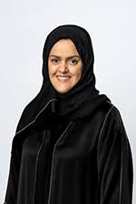
مؤسسة ورئيسة تنفيذية لشركة "يتوق" لخلطات القهوة العربية وآلاتها الأوتوماتيكية، وشاركت في تأسيس شركة أروم وشبكة صلة النسائية عام 2012. حاصلة على جائزة المرأة العربية في ريادة الأعمال 2014، وجائزة EY لريادة الأعمال 2015، وصُنّفت ضمن قائمة فوربس لأكثر القادة إبداعًا في المملكة 2013-2015. عضو مجلس إدارة الغرفة التجارية بالرياض منذ 2020.
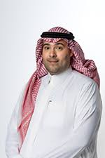
يتمتع بخبرة تزيد على 15 عامًا في الاستراتيجية والاستثمار والحوكمة. شغل منصب رئيس إدارة تطوير العقارات في SITE (2020-2022) ومدير إدارة الأصول في مجمع واحة الأعمال – أرامكو (2017-2020). انضم إلى شركة الأول للاستثمار عضوًا في لجنة الترشيحات والمكافآت منذ فبراير 2021.
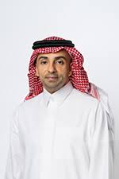
يتمتع بخبرة تمتد لأكثر من 18 عامًا في القطاع المصرفي بالمملكة. انضم إلى ساب عام 2012، وتولى عدة مناصب قيادية منها المدير العام لمصرفية الشركات العالمية (منذ 2019)، ورئيس المصرفية العالمية المشارك (2017-2019)، ورئيس القطاع العام (2013-2017). عضو مجلس إدارة شركة ساب للتكافل.
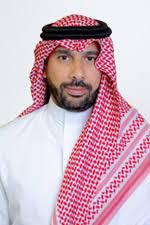
يمتلك 22 عامًا من الخبرة في قطاعات عدة، منها 16 عامًا في مصرفية الأفراد وإدارة الثروات. انضم إلى ساب عام 2012 وتقلّد مناصب قيادية متعددة، بما فيها الرئيس التنفيذي لعمليات مصرفية الأفراد والرئيس الإقليمي لمصرفية الأفراد وإدارة الثروات. عضو مجلس إدارة الشركة السعودية للمعلومات الائتمانية "سمة" منذ 2021.
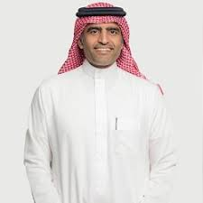
يتمتع بقرابة عشرين عامًا من الخبرة في تطوير استراتيجيات الاستثمار للأصول المتداولة والبديلة. عمل رئيسًا لإدارة المحافظ في أرامكو السعودية، وكان أحد المؤسسين لوقف جامعة الملك عبدالله للعلوم (كاوست) في واشنطن. أسس قسم الاستشارات الاستثمارية في جدوى للاستثمار، وعمل مع فريق إعادة هيكلة استثمارات المؤسسة العامة للتقاعد تحت شركة الاستثمارات الرائدة.
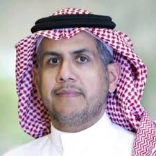
يشغل عضوية مجلس إدارة مجموعة تداول السعودية. كما يتولى مناصب قيادية في إيداع ومقاصة ووامض. يمتلك خبرة تتجاوز 13 عاماً في الأسواق المالية. قاد تطوير الأسواق والإدراجات والعمليات والاستراتيجيات. شارك في مبادرات التحول وتوسيع قاعدة المستثمرين. ساهم في تعزيز البنية التحتية للسوق المالي السعودي.
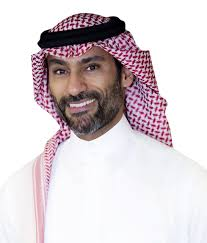
قاد تأسيس وتطوير كيانات استثمارية كبرى منذ 2009. عمل في أسواق مالية عالمية في نيويورك مع مؤسسات كبرى. أسس إدارة التراخيص في هيئة السوق المالية السعودية. شارك في تطوير استراتيجيات الاستثمار وإدارة المحافظ. يمتلك خبرة واسعة في بناء الأنظمة الاستثمارية. تلقى برامج قيادية في جامعات عالمية مرموقة.
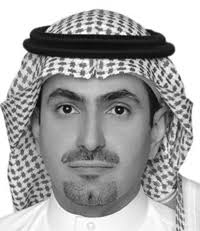
شغل مناصب قيادية في هيئة السوق المالية السعودية. أشرف على تطوير اللوائح واستراتيجيات السوق. شارك في إدارة العمليات والتحول المؤسسي. ساهم في صياغة قواعد السوق المالية. يمتلك خبرة تفوق 20 عاماً في القطاع المالي. يحمل مؤهلات هندسية وإدارية متقدمة.
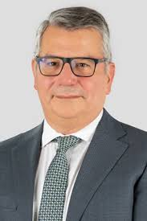
قاد عمليات الإدراج والأسواق الأوروبية في يورونيكست. شارك في تطوير المؤشرات والمنتجات المالية. شغل مناصب في مجالس إدارة مؤسسات دولية. يمتلك خبرة في الأسواق العالمية. ساهم في تطوير منصات التداول الدولية. حاصل على دكتوراه في المالية.
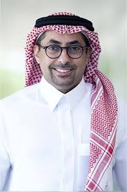
عمل في جي بي مورغان وستاندرد تشارترد وأموال الخليج. شارك في عمليات اندماج واستحواذ كبرى. قاد استراتيجيات أسواق المال والاستثمار. يمتلك خبرة في إدارة المحافظ الاستثمارية. عمل في المصرفية الاستثمارية لأكثر من 17 عاماً. حاصل على شهادات مالية دولية.
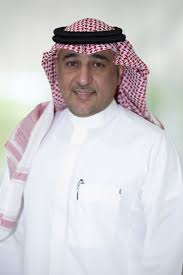
قاد تطوير المنتجات الاستثمارية في البلاد المالية. عمل في هيئة السوق المالية في تطوير الأنظمة. شارك في إطلاق منصات تنظيمية وسوقية. يمتلك خبرة في تطوير الأسواق المالية. ساهم في مبادرات التحول الرقمي للسوق. حاصل على ماجستير في الاقتصاد.
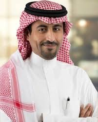
يمتلك خبرة في المقاصة والتسوية وإدارة المخاطر. عمل في تداول وإيداع ومقاصة. شارك في برامج تطوير ما بعد التداول. قاد مبادرات تشغيل السوق المالي. ساهم في تحسين البنية التحتية المالية. يمتلك خبرة تقنية ومالية متقدمة.
مستشار بالديوان الملكي وعضو هيئة كبار العلماء واللجنة الدائمة للبحوث والإفتاء في المملكة العربية السعودية. حاصل على الدكتوراه من جامعة الإمام محمد بن سعود الإسلامية عام 1404هـ، وتولى رئاسة قسم الفقه المقارن. يشارك في عدد من اللجان الشرعية بالمؤسسات المالية الإسلامية، وهو عضو في هيئة المحاسبة والمراجعة للمؤسسات المالية الإسلامية (البحرين). أشرف على رسائل علمية متعددة وله مؤلفات وبحوث في الاقتصاد الإسلامي.
أستاذ مشارك في قسم الشريعة بجامعة جازان، وعضو عدد من اللجان الشرعية في المؤسسات المالية الإسلامية. عضو لجنة المعايير الشرعية بهيئة المحاسبة والمراجعة للمؤسسات المالية الإسلامية. عضو فريق نظام المعاملات المدنية في لجنة التشريعات القضائية بالمملكة العربية السعودية. حاصل على الدكتوراه في الفقه من جامعة الإمام محمد بن سعود الإسلامية، وله عدد من المؤلفات والبحوث في الاقتصاد الإسلامي.
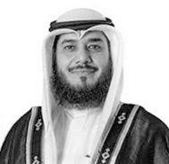
أستاذ دكتور في قسم الفقه المقارن بجامعة الكويت، وعضو المجلس الشرعي في هيئة المحاسبة والمراجعة للمؤسسات المالية الإسلامية. يشارك في عدد من اللجان الشرعية للبنوك والمؤسسات المالية مثل بنك بوبيان، بنك وربة، البنك الأهلي المتحد، وبنك لندن والشرق الأوسط. حاصل على الدكتوراه في الفقه المقارن من الجامعة الأردنية، وله مؤلفات وأبحاث في الاقتصاد الإسلامي.